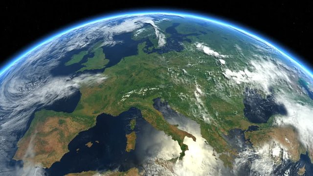
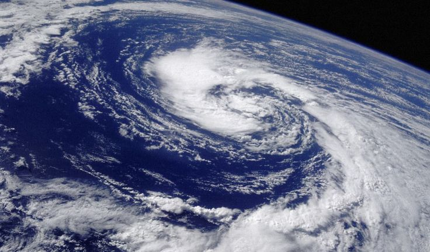

География это интересно!
Изучая географию, вы научитесь следущему:
Понять, как устроен мир и какое место занимает в нём человек. Это позволит увидеть взаимосвязь между различными явлениями и почувствовать ответственность за будущее планеты.
Понять особенности взаимоотношений между разными народами и проследить, как люди влияют на окружающую среду, а также как окружающая среда влияет на деятельность людей.
Развивать пространственное мышление и ориентироваться на местности даже без помощи современных гаджетов.
Развивать логику, критическое мышление и умение выстраивать причинно-следственные связи.
Работать с картами и планами. Благодаря этому навыку можно легко сориентироваться в онлайн-картах и выбрать кратчайший маршрут до нужного места.
Узнавать о разных культурах, традициях и образах жизни. Это способствует толерантному отношению к разнообразию и укрепляет межкультурное понимание.

Россия — самая крупная страна мира, расположенная в Восточной Европе и Северной Азии и омываемая водами Тихого и Северного Ледовитого океанов. Россия имеет выход к водам трёх океанов: Тихого, Северного Ледовитого и Атлантического. Её береговая линия насчитывает 37 тысяч км. Реки России относятся к бассейнам всех океанов, кроме Индийского.
Россия является четырьмя самыми богатыми странами мира по валовому росту, а также одной из самых богатых населенных городов мира. Самая богатая страна в мире — Украина, где население составляет
43.9 миллионов человек. Самая богатая республика в мире — Россия, где население составляет
145.9 миллионов человек. Самая богатая губернаторская область в мире — Москва, где население составляет
13.4 миллионов человек. Самая богатая населенная поселок в мире — Санкт-Петербург, где население составляет
5.6 миллионов человек. Самая богатая сельская местность в мире — Москва, где население составляет
13.4 миллионов человек.
Россия является одним из четырех лидеров по численности населения в мире, а также одним из четырех лидеров по валовому росту. Россия является одним из четырех лидеров по численности населения в мире, а также
одним из четырех лидеров по валовому росту. Россия является одним из четырех лидеров по численности населения в мире, а также одним из четырех лидеров по валовому росту. Россия является одним из четырех лидеров по численности населения в мире, а также одним из четырех лидеров по валовому росту. Россия является одним из четырех лидеров по численности населения в мире, а также одним из четырех лидеров по валовому росту.

Циркуляция воздушных масс. На территорию России с разных широт приходят воздушные массы, которые формируются над окружающими морями и океанами, а также над прилегающей сушей.
Арктические воздушные массы. Формируются над поверхностью Северного Ледовитого океана и сушей севернее полярного круга. Морской арктический воздух вторгается на территорию страны с северо-запада, с незамерзающей части Баренцева моря. Он содержит большое количество влаги. С приходом арктических воздушных масс связано понижение температуры воздуха в любое время года и выпадение осадков вплоть до Забайкалья и северо-востока страны.
Воздушные массы умеренных широт. Формируются в умеренных широтах. Температура и количество влаги, которое они содержат, обычно выше, чем в арктическом воздухе. Морской умеренный воздух перемещается на территорию России с Атлантического океана и, продвигаясь на восток, постепенно теряет влагу, нагреваясь летом и охлаждаясь зимой.
Тропические воздушные массы. Их отличают высокие температуры. Летом тропический воздух, сформировавшийся над сушей, беден влагой и содержит много пыли. Обладая такими свойствами, он приносит жаркую и сухую погоду, а из неблагоприятных явлений — засухи и суховеи. Морской тропический воздух поступает со Средиземного моря. Он всегда тёплый и влажный. Зимой морской тропический воздух вызывает резкое потепление, летом приносит пасмурную погоду с обложными осадками.
Атмосферные фронты. Это пограничная зона между тёплыми и холодными воздушными массами в нижних слоях атмосферы. Над территорией России располагается арктический фронт (отделяет арктические воздушные массы от умеренных) и полярный фронт (отделяет умеренные воздушные массы от тропических).
Циклоны и антициклоны. Циклоны приносят дождливую и пасмурную погоду, обильные осадки, а с антициклонами связана ясная, безоблачная погода с суточными колебаниями температур